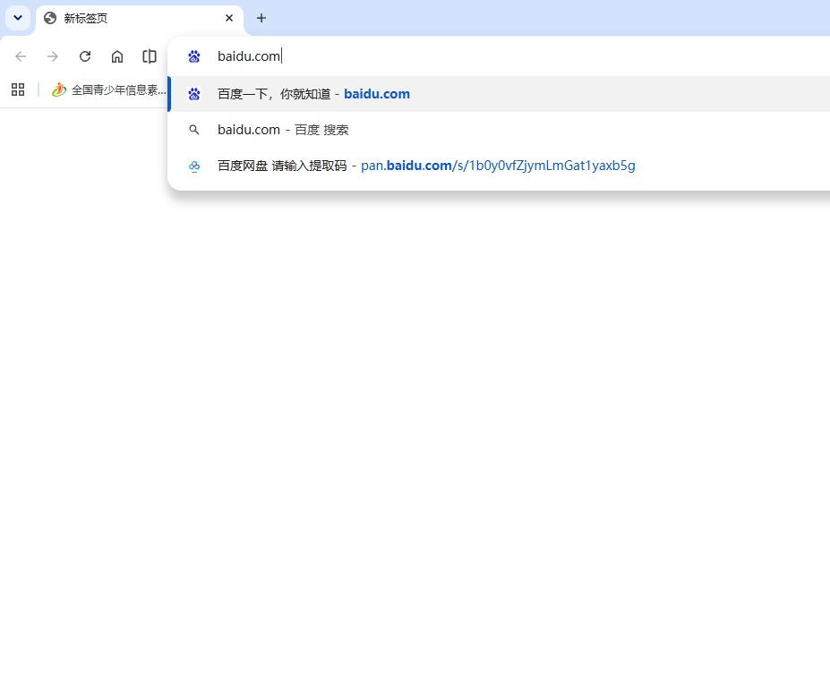
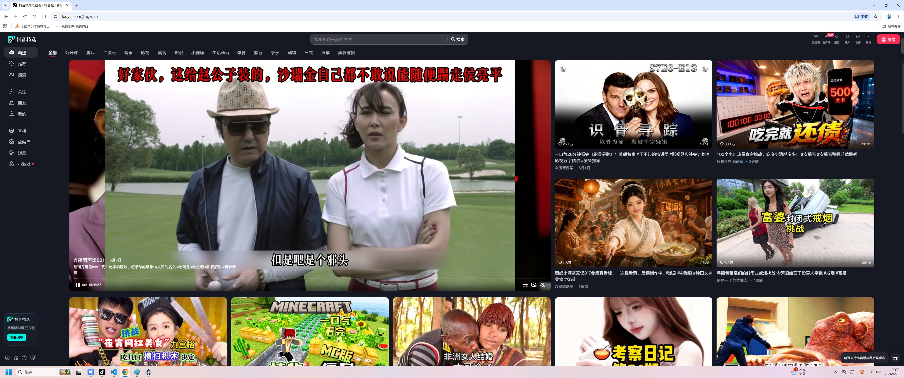

Web应用（Web Application，简称Web App）是一种通过互联网访问 的应用程序，运行在浏览器中，无需下载安装即可使用。它基于客户端 -服务器架构，利用前端和后端技术实现交互功能， 为客户提供类似桌面软件或移动App的体验。
使用web应用是十分便捷的，我们只需要一个浏览器和rul地址，就可以 获取我们想要的web资源，例如右图： 等待网络加载完成，就能进入应用 web的特点就是，通过网址访问，无需从应用商城下载安装包。 web应用通过浏览器运行可以兼容不同操作系统，可以同时兼容 平板、电脑、手机等设备
1.可以直接通过URL访问，无需从应用商店下载安装包
2.通过浏览器运行，兼容不同操作系统（Windows、macO）
3.用户无需手动升级及获取最新版本
4.web应用通常需要联网才能使用（部分支持离线缓存）
接下来我们来详细了解一下web的整体技术架构， 一个完整的web项目项目一般由两个部分组成，分别 是前端和后端
我们先来聊聊前端，前端就是用户看得见和可以操作的部分， 这个就是一个前端页面见右图。 在这个页面中我们可以看到视频、文字；我们可以点击看不同的视频、 上下滑动切换不同的视频、还可以通过不同的分类标签来获取你感兴趣 的内容、你也可以通过评论区和其他用户互动。 这些用户可以看得见的图片、文字、视频，以及可以点击按钮，炫酷的动画一起组成的页面就是前端页面了。
前端页面是指用户在浏览器器或移动端
直接看到并与之交互的网页界面部分，
它负责内容的展示、样式设计和用户
交互逻辑。
HTML：定义网页的结构和内容CSS：控制页面的样式（颜色、布局、动画等）JavaScript：实现动态交互（点击、数据加载等） 想要做出有没得前端页面，必须熟练掌握这三门语言。 现在我们已经对前端有了一定概念了，接下来我们来了解一下后端。
后端是指用于处理服务器端逻辑、数据库交互、
API开发以及业务核心功能的技术栈，它支
撑着前端页面的数据来源和业务逻辑，确保
整个web系统的稳定运行。
简单来说，后端就是负责管理web应用的数据，并在有需要时响应数据给前端。
Web前端负责让用户直接看到、操作并与之交互的部分，
简单来说，前端开发者是把设计搞变成可交互网页的人，
他们用代码实现视觉效果、动态交互，并连接后端数据。
在开发中前端工程师的职责包括以下几点
| 职责 | 具体内容 |
|---|---|
| UI实现 | 将设计师的Figma/PSD稿转换为HTML+CSS页面，确保视觉效果一致。 |
| 交互逻辑 | 通过JavaScript实现按钮点击、表单提交、动画效果等功能。 |
| 数据绑定 | 调用后端API获取数据（如商品列表、用户信息），并动态渲染到页面。 |
| 响应式适配 | 确保网页在手机、平板、PC等不同设备上正常显示（如使用Flex/Grid布局）。 |
| 性能优化 | 减少加载时间、压缩资源、懒加载图片等，提升用户体验。 |
| 跨浏览器兼容 | 解决Chrome、Firefox、Safari等浏览器的显示差异问题。 |
到现在，我们已经对web、前端、以及前端工程师都有一个初步的认识了， 从下一章起，我们就开始进入前端开发的世界了！

